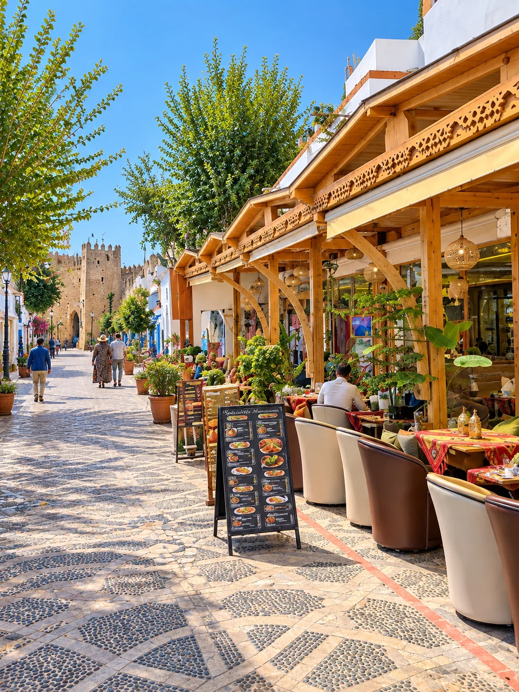

01
Mañana · Plaza Uta el-Hammam y Bab Souk
Perderse en azul
Plaza Uta el-Hammam, Chefchaouen · Entrada libre · Todo el día
Llega la noche anterior y sal antes de las 9h: a esa hora la medina pertenece casi exclusivamente a sus habitantes. Camina sin rumbo fijo por la calle Targui, el tramo más fotografiado de toda la ciudad, con sus escaleras azul intenso y sus puertas de madera con clavos metálicos heredadas de la tradición andalusí.
Cruza después Bab Souk, una de las puertas históricas de entrada a la medina y punto de referencia habitual para orientarse entre el laberinto de callejones. Desayuna en una azotea con vistas a los tejados: pan recién horneado, aceite de oliva local, queso de cabra y té a la menta son la combinación más habitual.
- Plaza Uta el-Hammam: corazón social de la ciudad, presidida por la Kasbah del siglo XV y la Gran Mezquita, cuyo minarete octogonal es poco habitual en el resto de Marruecos.
- Kasbah de Chefchaouen: antigua fortaleza con jardines interiores y un pequeño museo etnográfico. Entrada simbólica de unos 10 MAD.
- Souk de telas y especias: a pocos metros de la plaza, ideal para una primera toma de contacto con los colores y olores de la medina.
